偶々北陸に用事があったのでついでに新潟県の上越地方で気になっていたお寺を幾つか回ってみた。
訪れたのは新潟県上越市、直江津である。
直江津は鉄道好きな方々には有名な街だそうだが、私的には「直江津といえば？」と聞かれたら…答えが思い浮かばない。すんません。
同じ上越市でも高田には何度か訪れたこともあったが、直江津に来たのは多分初めてだと思う。
駅からテクテク歩く。
休日の昼時だというのに街には人の姿がない。大丈夫なのか。
しばらく歩いて行くと大きなお寺がある。
泉蔵院という真言宗の寺院だ。
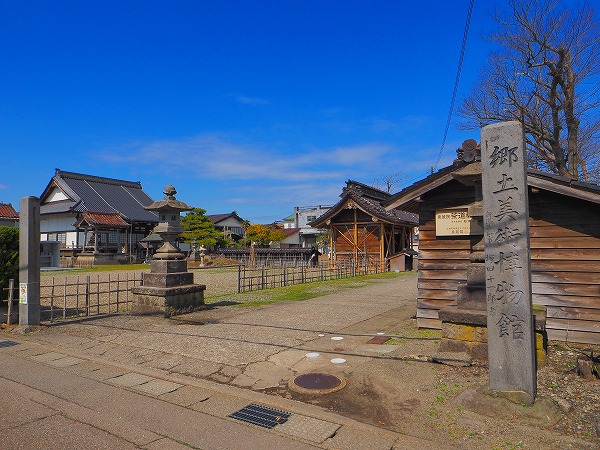
後に調べると直江津最古の寺院で1200年以上の歴史を誇る寺だという。
本尊は秘仏で弘法大師がつくったといわれている。
郷土美術博物館という石碑が目に留まる。
しかし結局どれが郷土美術博物館なのか判らなかった。
ちなみに新潟県知事塚田十一郎書とあるが、知事の任期は1960年代だ。
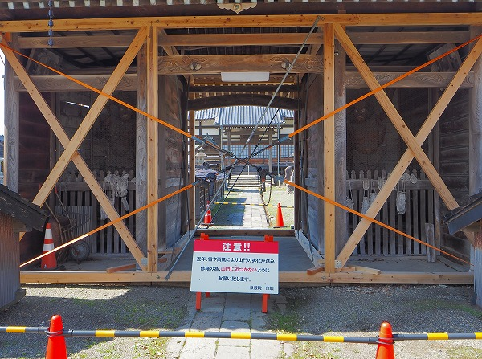
山門は劣化が進み近づけなかった。
遠くから眺めるだけだったが、
かなりイイ感じの仁王様がいらっしゃった。
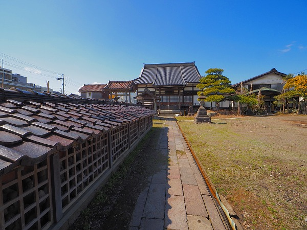
山門と本堂の間に細長いお堂があった。
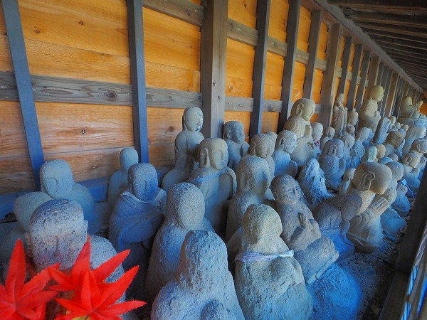
中には大量の石仏が。
一説には死んだ子供の供養のために奉納されたものだとか。
直江津は北前船の寄港地だったので青森辺りの地蔵信仰と共通したものがあるのかも知れない。
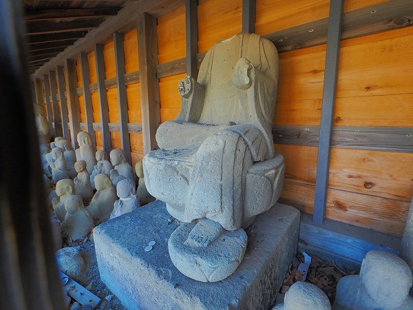
首の落ちてしまった石仏。
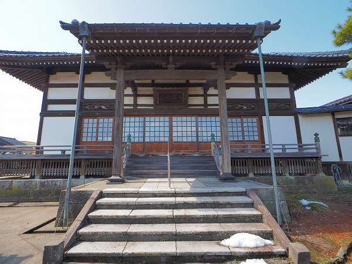
本堂。
中には秘仏の地蔵菩薩が祀られているそうな。
さて。
今回話題にしたいのは山門の前に建つこちらのお堂。
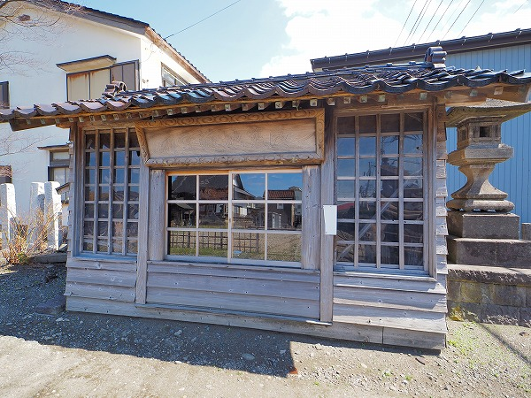
冒頭にご覧いただいた郷土美術博物館の石碑のすぐ隣に建っている。
一見地味なお堂。
額には「改築地蔵堂」とある。
字が薄れて見難かったが大正年間のもののようだ。
中を覗いてみるとビックリ！
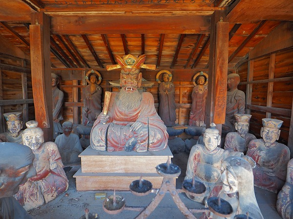
強インパクトの方々がみっしりと。
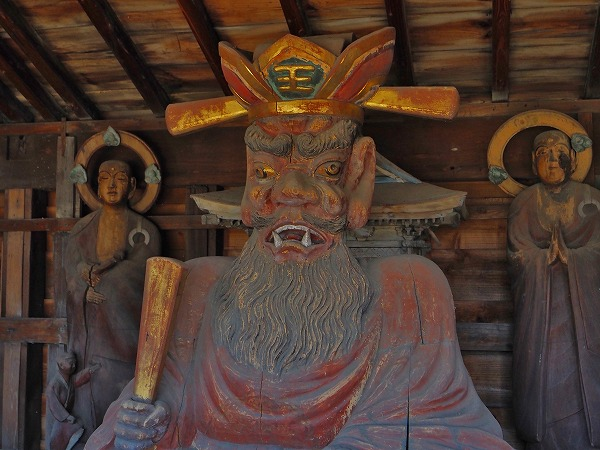
何といっても最強なのが中央に鎮座する
閻魔大王。
片方しかないが巨大な耳、段違いの目玉、顔から飛び出しそうな眉毛、口から飛び出した牙…。
死後の裁きを行う閻魔大王にしては面白すぎる表情だ。
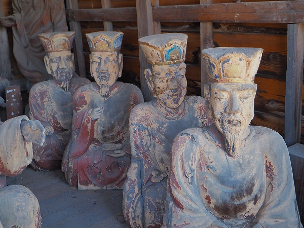
閻魔大王の右には4体の王。
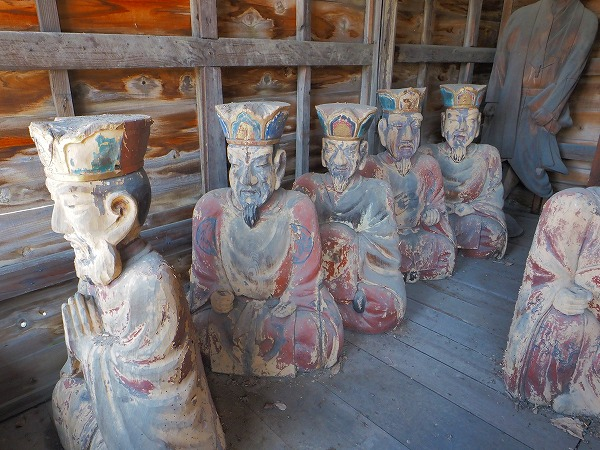
左には5体の王、つまり地蔵堂とは謳っているが実質的には十王堂なのだ。
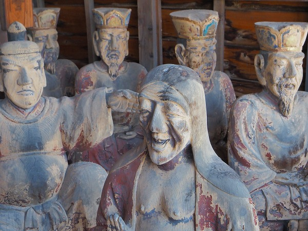
奪衣婆も笑っているように見えますけど…いや、確実に笑ってるな。
ここまでが十王堂のレギュラー組。
他にも閻魔大王の左右に補佐役の司命と司録の像がある。
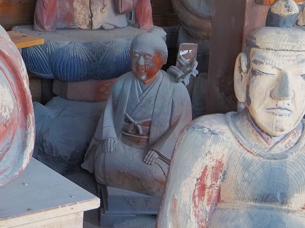
気になったのは一回り小さい像。
町人っぽい出で立ち。誰？
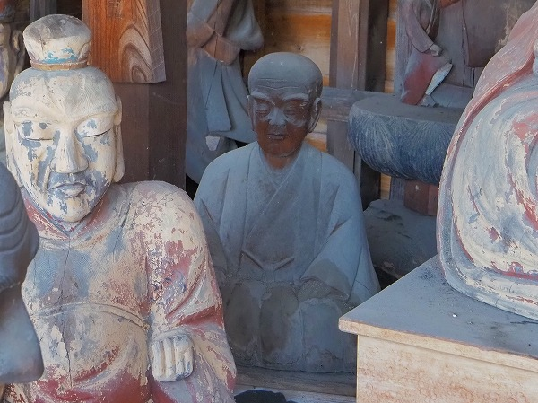
逆サイドにも。誰？
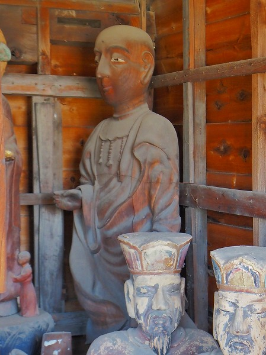
お堂の端っこには僧形らしき像がある。
お地蔵さんなのかな。でも隣りにいるお地蔵さんとはあまりにも姿がかけ離れている。
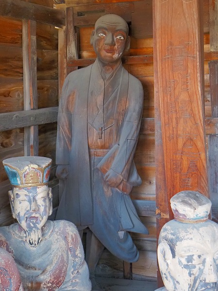
逆サイド。
目が怖い。
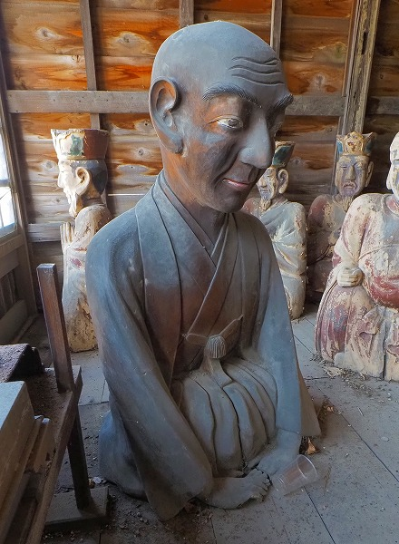
閻魔大王に向かうようにして座る羽織袴の人。
鼻の大きさなどから上記3体は同じ作者と考えられる。
もしかしたら閻魔大王はともかく他の九王も同じ作者かも知れない。
閻魔大王の後にいる三体の地蔵は他の作者だろう。
そして閻魔大王像は…色々超越し過ぎていて良く判りません…。
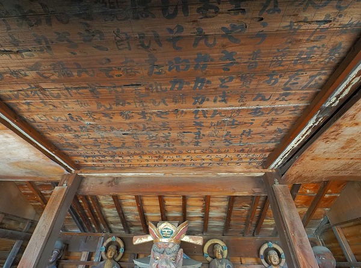
閻魔大王の頭上には真言のようなものが書かれていた。
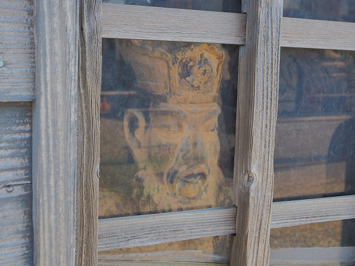
近所のチビッ子とかが知らないで中を覗いたら腰を抜かすかもですな。
元々新潟県、特に上越地方は当サイト既報の通り十王信仰や地蔵信仰が盛んなお土地柄である。
この地蔵堂（十王堂）も
この地方のローカル化した十王信仰の一例としてカウント出来るのではないか、と私は思う。
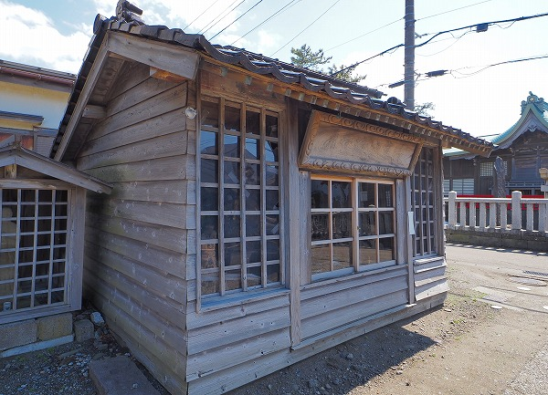
お寺と道路を挟んだ向かいには神社がある。
八坂神社である。
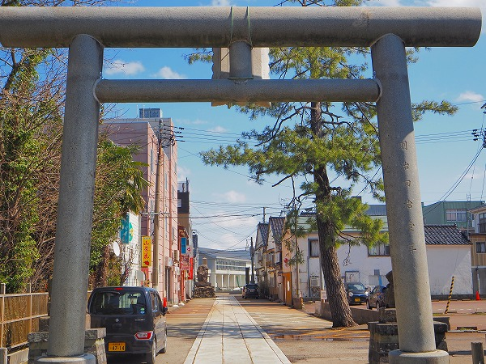
神社としては普通の神社だったのだが、気になったのはその参道。
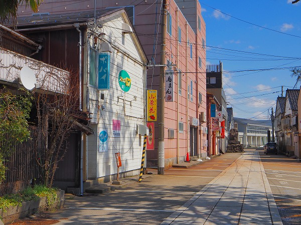
参道がスナック街になっているのだ。
人もまばらな街の神社の参道にスナック街。
なんとも不思議な光景だった。
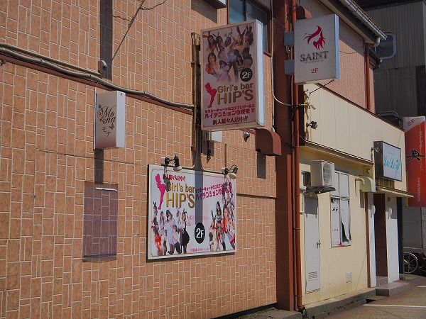
ガールズバーまであるのか。
セクシーキュートなコスプレガールとハイテンションな夜を！って…。
スサノオノミコトもビックリですな。